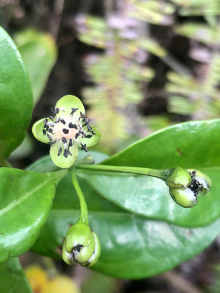

Barbeuiaceae
Barbeuiaceae is a monotypic plant family, containing only a single genus, Barbeuia, with a single species, Barbeuia madagascariensis. This species is a woody vine (liana) endemic to the island of Madagascar. The family holds significant phylogenetic interest as an early-diverging lineage within the order Caryophyllales.
Overview
The Barbeuiaceae family is unique in consisting of just one species, Barbeuia madagascariensis, a large woody climber (liana) found only in the forests of Madagascar. Its restricted distribution and solitary status make it a plant of significant interest for biodiversity and conservation.
Historically, the placement of Barbeuia was uncertain, often tentatively included in families like Phytolaccaceae. However, modern molecular phylogenetics has established Barbeuiaceae as a distinct family representing an early evolutionary branch within the large and diverse order Caryophyllales. This placement sheds light on the early evolution of this major plant group.
Due to its rarity and restricted range, Barbeuia madagascariensis has no significant economic importance but is a vital part of Madagascar's unique flora and holds considerable scientific value for understanding plant evolution.
Quick Facts
- Scientific Name: Barbeuiaceae
- Common Name: (None)
- Number of Genera: 1 (Barbeuia)
- Number of Species: 1 (Barbeuia madagascariensis)
- Distribution: Endemic to Madagascar
- Evolutionary Group: Eudicots - Caryophyllales
Key Characteristics
Growth Form and Habit
The single species, Barbeuia madagascariensis, is a large, woody perennial vine (liana), climbing high into the forest canopy.
Leaves
Leaves are simple, arranged alternately along the climbing stems. They possess petioles and have blades that are typically leathery (coriaceous) with entire (smooth) margins. The underside of the leaves is often covered in whitish or brownish hairs (tomentose). Stipules are absent.
Flowers
Flowers are borne in branched, axillary clusters (cymes). Individual flowers are relatively small, bisexual, and radially symmetrical (actinomorphic).
- Sepals: 5, separate or slightly fused only at the very base. They are typically hairy and persist after flowering, often enclosing the fruit.
- Petals: 5, separate, and notably smaller than the sepals. Sometimes described as rudimentary or scale-like.
- Stamens: Numerous (often reported as 30 or more), with distinct filaments.
- Ovary: Superior, composed of 2 (occasionally 3) fused carpels forming a single chamber (1 locule). Contains a single ovule attached at the base (basal placentation). A single style terminates in a 2-lobed stigma.
Fruits and Seeds
The fruit is a dry, somewhat woody or leathery capsule containing a single seed. Dehiscence (opening) may be irregular or occur via valves. The seed is relatively large and may possess a fleshy appendage known as an aril, which could be related to dispersal.
Chemical Characteristics
Specific chemical studies on Barbeuia may be limited. However, as a member of the Caryophyllales, it might potentially synthesize betalain pigments (characteristic of the core Caryophyllales) or anthocyanins (more common in early-diverging lineages of the order). Further research is needed to confirm its specific chemical profile.
Field Identification
Identifying Barbeuiaceae means identifying the single species Barbeuia madagascariensis within its native range:
Primary Identification Features
- Habit: Must be a large woody vine (liana).
- Location: Found exclusively in Madagascar.
- Leaves: Simple, alternate, with entire margins, leathery texture, and often distinctly hairy underside (whitish/brownish tomentose).
- Flowers: Radially symmetric with numerous stamens and a superior ovary containing only one ovule in its single locule.
Secondary Identification Features
- Inflorescence: Flowers grouped in axillary cymes.
- Sepals: 5 persistent, hairy sepals.
- Petals: 5 small, inconspicuous petals.
- Fruit: A single-seeded capsule, often retaining the sepals.
Seasonal Identification Tips
- Year-round: The liana habit and distinctive alternate, entire, leathery leaves (especially hairy beneath) are key vegetative features visible throughout the year.
- Flowering/Fruiting: Identification is confirmed by examining the flowers (numerous stamens, ovary structure) or the single-seeded capsule fruits during the appropriate season in Madagascar.
Common Confusion Points
- Other Lianas: In Madagascar, Barbeuia could be confused with other unrelated lianas based solely on habit. Close inspection of leaf arrangement, leaf surface (hairiness), flower structure (especially the numerous stamens and single ovule per ovary), and fruit type is necessary for correct identification.
- Historical Placement: Previously sometimes placed in families like Phytolaccaceae, but differs in details like ovary structure (Phytolaccaceae often has multiple carpels/locules) and petal presence. Molecular data now firmly separates it.
Field Guide Quick Reference
Look For:
- Woody vine (liana) habit
- Endemic to Madagascar
- Alternate, simple, entire, leathery leaves
- Leaves often hairy white/brown beneath
- Radially symmetric flowers
- Numerous stamens (>30)
- Superior ovary, 1 locule, 1 ovule
- Single-seeded capsule fruit
Key Variations:
- Minimal variation expected (monotypic family).
Notable Examples
As a monotypic family, there is only one species:
Barbeuia madagascariensis
(No common name)
The sole representative of the family Barbeuiaceae. It is a large woody vine endemic to the forests of Madagascar. It is characterized by its alternate, simple, leathery leaves often hairy below, and its small flowers with numerous stamens, followed by a single-seeded capsule. Its unique phylogenetic position makes it important for botanical research.
Phylogeny and Classification
Barbeuiaceae's phylogenetic position is of considerable interest. It belongs to the large and diverse order Caryophyllales. Molecular studies have robustly shown that Barbeuiaceae represents an early-diverging lineage within this order. It is often considered the sister group to the large clade containing the "core Caryophyllales" (which includes families like Caryophyllaceae, Amaranthaceae, Cactaceae, Aizoaceae, etc.) and potentially other related families like Polygonaceae and Plumbaginaceae, although the exact branching order near the base of Caryophyllales can sometimes vary slightly between analyses.
This isolated position means that Barbeuia retains a unique combination of ancestral and derived features, providing valuable clues about the early evolution of traits within the Caryophyllales, such as floral structure, pigment chemistry (betalains vs. anthocyanins), and adaptations to diverse environments.
Position in Plant Phylogeny
- Kingdom: Plantae
- Clade: Angiosperms (Flowering plants)
- Clade: Eudicots
- Clade: Core Eudicots
- Order: Caryophyllales
- Family: Barbeuiaceae
Evolutionary Significance
Barbeuiaceae holds significant evolutionary importance:
- Basal Lineage: Its position as an early-diverging lineage is crucial for reconstructing the ancestral characteristics and evolutionary history of the entire Caryophyllales order.
- Biogeography: Its endemism to Madagascar suggests ancient origins and potentially vicariance or long-distance dispersal events related to the breakup of Gondwana or later island history.
- Unique Trait Combination: Studying Barbeuia helps understand how key traits of Caryophyllales (like pigment types, adaptations to stress, unique ovule features) evolved over time.
- Biodiversity Hotspot: Highlights the unique evolutionary history preserved within Madagascar's flora.